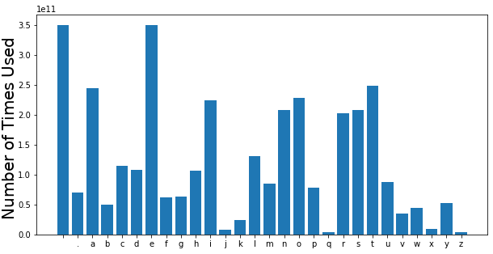
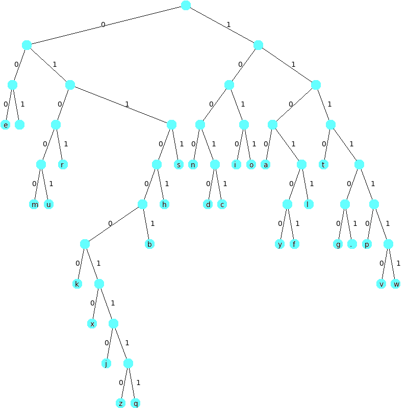

Lab 7: Huffman Trees (4 Points)
Chris Tralie
Overview / Logistics
The purpose of this lab is to get you practice with tree data structures
git clone --recursive https://github.com/ursinus-cs174-f2022/Lab7_HuffmanTrees.git
The code layout is based on code we wrote in class to draw binary trees. In this lab, you will be making a different kind of tree from the bottom up called a Huffman Tree, which can be used to compress and encrypt data.
When you are finished, upload your tree.cpp file to canvas
Learning Objectives
- Use recursion to traverse tree structures
- Use priority queues to build trees from the ground up
- Build Huffman Trees based on character counts
Background: Huffman Trees
Let's suppose we wanted to do a binary encoding of the 26 letters in the alphabet, plus a space, plus a period, for a total of 28 characters. Then we would need ceil(log2(28)) = 5 bits to represent each character. For example, we might then have this codebook:
One drawback of this, however, is that we use some characters more than others. For example, we use an e much more than a q. In fact, the histogram below shows how often characters were used across a snapshot of the entire Internet captured by Google
So we might like to use fewer bits to encode an e than a q. The challenge, though, is to create a code that is prefix free and uniquely decodable, which means that no encoding is a prefix of another one, and we can unambiguously go back from a binary representation back to a code. For example, if we had an encoding where
- e is a 0
- r is a 01
- q was a 00010
One solution to this problem is to build something called a Huffman Tree. The image below shows one such Huffman tree you will be building in this assignment, as drawn by the assignment tree drawing code:

Each letter in the codebook is a leaf node (a node with no children). To create a code, examine the path going down from the root to each letter's leaf node. Every time the path goes to the left, append a 0 to the string, and every time the path goes to the right, append a 1 to the string. From this, we get the following codebook:
Notice now how character that the two most often used characters, a space and an e, only need 3 bits, while other commonly used characters like a, i, n, o, r, s, and t only need 4 bits. So we're saving our original 5 bits that we would have used on them. By contrast, we double the number of bits needed for uncommon characters z and q from 5 to 10, but on average we still use fewer than 5 bits, because z and q come up so infrequently.
Programming Tasks
For all of the tasks, you will simply need to make edits to tree.cpp. Executables with main methods to run the tasks have been provided for you
Building The Tree (2 Points)
Build a Huffman tree from the bottom up by filling in the method buildHuffmanTree in tree.cpp. This method starts out by putting all of the letters onto a priority queue as leaf nodes. As explained in the comments of that file, you will need to add internal nodes that merge together the nodes on the priority queue with the smallest counts.
Recall that to see what's at the top of the priority queue, you say nodes.top(), and to take off what's at the top of a priority queue, you say nodes.pop(). Be sure to assign pointers properly in the new nodes.
Once you believe this is working, execute the file draw.cpp by typing
This should output a drawing of the Huffman tree shown in the background to a file called tree.png
Encoding (1 Point)
Fill in the encode method in tree.cpp to use the Huffman tree to encode an arbitrary string to a binary string that you output. You can test this with the encode.cpp file. For instance, if you say
Then you should get 10100011101110111111110000001100110111 as the output.
Decoding (1 Point)
Fill in the decode method in tree.cpp to use the Huffman tree to decode a binary string into a string of characters. You can test this with the decode.cpp file. For instance, if you say
Your program should print huffman rocks